Introducción
Objetivo de este tutorial
El objetivo de este tutorial es que aprendas a generar tu propio tutorial (😜) interactivo en R usando la paquetería learnr. Esta paquetería consta de funciones que permiten modificar un archivo .Rmd para incluir cuestionarios, ejercicios de código entre otras cosas.
Esquema de este tutorial
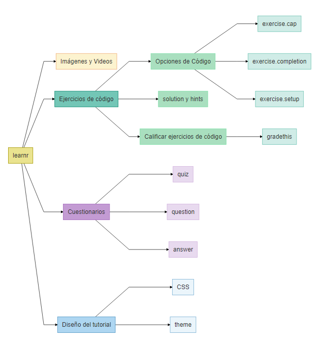
Primeros pasos
Crear un tutorial interactivo
Instalar y cargar learnr
Usa este comando install.packages("learnr") en tu consola de R/RStudio para instalar el paquete learnr.
Como ejercicio, ingresa el comando para cargar la paquetería dentro del archivo de tu tutorial.
library(learnr)Crear un tutorial
Opción 1: Para crear el tutorial desde cero
Crear un nuevo Rmarkdown:
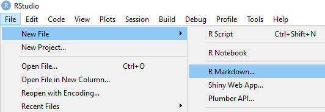
Seleccionar la plantilla de Interactive tutorial
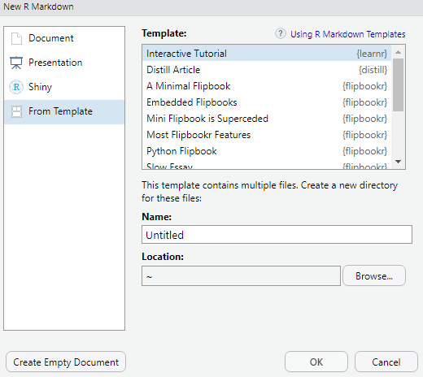
Opción 2: Modificar un .Rmd ya existente
- En un archivo Rmarkdown modificar el YAML header para incluir el output que se muestra:
---
title: "Tutorial"
output:
learnr::tutorial:
theme: flatly
highlight: tango
runtime: shiny_prerendered
description: "Esto es un tutorial de learnr para aprender a usar learnr."
---Ejercicios de código
¿Te gustaría que los estudiantes puedan aplicar lo que se enseña en tu tutorial sin la necesidad de abrir otro archivo o la consola de R? En esta sección aprenderemos a crear ejercicios de código, los cuales permiten ejecutar código de R dentro del tutorial.
¿Cómo crear un ejercicio de código?
Crear un chunk de código R. En RStudio podemos usar el atajo
CTRL + ALT + I.Añadir la opción
exercise=TRUEen el chunk para convertirlo en un ejercicio.
Ejemplo:
Código
'''{r ejercicio, exercise=TRUE}
#Aquí puedes ingresar código de R y ejecutarlo.
'''Resultado
#Aquí puedes ingresar código de R y ejecutarlo.¿Cómo modificar un ejercicio de código?
Para modificar un ejercicio de código usamos las opciones del chunk del ejercicio, las cuales no se muestran en el tutorial (y en general no se muestran en los .Rmd).
Ejemplo:
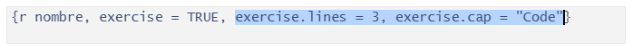
Veamos qué es posible hacer con los ejercicios de código usando las opciones de la siguiente tabla:
| ¿Quieres… | Usa la opción: | ¿Qué valores toma la opción? | Resultado |
|---|---|---|---|
| cambiar el número de lineas que aparecen en el ejercicio? | exercise.lines = n |
n puede ser: 1, 2, 3, …. Es el número de filas de código que se muestren en el tutorial. | 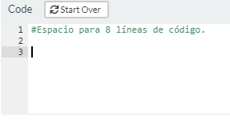 |
| modificar el título del ejercicio? | exercise.cap |
Una cadena de caracteres. Por default, exercise.cap = "Code" |
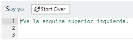 |
| preevaluar el código del ejercicio? | exercise.eval |
Un boleano. Por default es FALSE. |
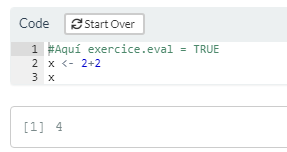 |
| evitar que el código ingresado tome demasiado tiempo en ejecutarse? | exercise.timelimit |
Un entero. Representa el tiempo límite de ejecución del código en segundos. No significa que el usuario tenga ese tiempo para completar el código. |
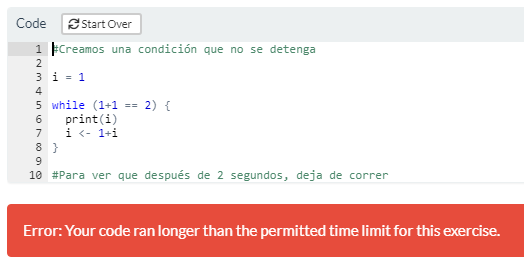 |
| brindar o quitar ayuda al estudiante? | exercise.completion |
Un boleano. Por default es TRUE. |
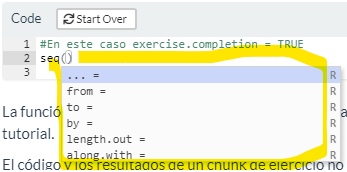 |
| prevenir al estudiante sobre errores de codificación? | exercise.diagnostics |
Un boleano. Por default es TRUE. |
Ve ejemplo en la sección: ¿Cómo puedo ayudar al usuario? |
| permitir que se reinicie el ejercicio? | exercise.startover |
Un boleano. Por default es TRUE. |
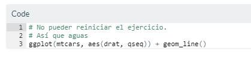 |
El uso de estas opciones depende del propósito del tutorial, pero es posible que se requiera la misma opción para todos los ejercicios. ¿Existe alguna forma de fijar opciones para todos los chunks de ejercicio a la vez?
¡Sí! con la función tutorial_options() podemos ahorrar tiempo al fijar dichas opciones. Esta configuración global puede especificarse en un chunk con nombre setup al inicio del tutorial. También es recomendable cargar todas las librerías que se requieran para el tutorial en dicho chunk.
¿Cómo funciona un chunk de ejercicio? Cada chunk de ejercicio tiene su propio ambiente en R, por lo que los objetos creados en un ejercicio no estarán disponibles para cualquier otro chunk.
Una forma permitir que dichos objetos estén disponibles fuera del ejercicio en el que se crean es usando la opción exercise.setup="nombre-chunk-a-usar"en el chunk de ejercicio en el que queremos usar el resultado previo. Podemos ir formando una cadena de resultados a usar de esta forma.
Ejemplo.
Código de chunk que contiene el objeto a usar:
'''{r respuesta}
grafica_pinguinos <- ggplot(data = penguins) +
aes(x = flipper_length_mm) +
geom_histogram(aes(fill = species),
alpha = 0.5,
position = "identity")
'''
Código de chunk del ejercicio que el usuario completa:
1. Completa el siguiente código para generar una gráfica con los datos del data.frame penguins
'''{r ejercicio7, exercise=TRUE, message=FALSE,warning=FALSE}
grafica_pinguinos_usuario <- ggplot(data = ______) +
aes(x = flipper_length_mm) +
geom_histogram(aes(fill = species),
alpha = 0.5,
position = "identity") +
labs(x = "Flipper length (mm)",
y = "Frequency",
title = "Penguin flipper lengths") +
scale_fill_manual(values = c("darkorange","purple","cyan4"))
grafica_pinguinos
'''
Código del chunk del ejercicio donde el usuario utiliza el objeto creado en el chunk "respuesta".
2. Agrega el tema minimal al gráfico anterior.
'''{r ejercicio7_2, exercise=TRUE, exercise.setup="respuesta"}
grafica_pinguinos + _____
'''- Completa el siguiente código para generar una gráfica con los datos del data.frame
penguins
grafica_pinguinos_usuario <- ggplot(data = ____) +
aes(x = flipper_length_mm) +
geom_histogram(aes(fill = species),
alpha = 0.5,
position = "identity")
grafica_pinguinos- Agrega el tema
minimalal gráfico anterior.
grafica_pinguinos + _____grafica_pinguinos + theme_minimal()Notemos que la segunda parte del ejercicio va ligada a un chunk que contiene la respuesta correcta y no al chunk de la parte 1 del ejercicio (que contiene la respuesta del usuario). 😢
Ejercicios con hints y soluciones
Si algún ejercicio de tu tutorial requiere una muy buena comprensión del código o consideras que tiene un nivel alto de dificultad, puedes incluir hints para los estudiantes (sujerencias/orientación sobre cómo resolver el ejercicio). Además puedes incluir el código de la solución para que los estudiantes puedan identificar la forma correcta de resolver el ejercicio.
Para lograr esto usamos el sufijo -hint en el nombre del chunk que contiene el hint o mostrar el código de la solución añadiendo -solution al nombre del chunk que contiene la solución.
Por ejemplo, para proporcionar código que de una pista para resolver el ejercicio que tiene nombre de chunk ejercicio1, escribimos la pista en un chunk que tenga nombre ejercicio1-hint. De manera similar, para proporcionar el código de la solución de este ejercicio lo escribimos en un chunk con nombre ejercicio1-solution.
Código:
Este es el código del chunk del ejercicio:
'''{r ejercicio1, exercise=TRUE}
#Aquí va el ejercicio:
# Cambia al color de los puntos a rosa
ggplot(mtcars, aes(x=mpg,y=cyl)) +
geom_point()
'''
Este es el código del chunk del hint:
'''{r ejercicio1-hint}
#Aquí va el hint para el ejercicio 1
# Usa el parámetro color dentro de geom_point()
'''Resultado:
# Cambia al color de los puntos a rosa
ggplot(mtcars, aes(x=mpg,y=cyl)) +
geom_point()#Usa el parámetro color dentro de geom_point()Código:
Este es el código del chunk del ejercicio:
'''{r ejercicio2, exercise=TRUE}
#Aquí va el ejercicio:
# Cambia al color de los puntos a verde
ggplot(mtcars, aes(x=mpg,y=cyl)) +
geom_point()
'''
Este es el código del chunk de la solución:
'''{r ejercicio2-solution}
#Aquí va la solución del ejercicio 1
ggplot(mtcars, aes(x=mpg,y=cyl)) +
geom_point(color = "green")
'''Resultado:
# Cambia al color de los puntos a verde
ggplot(mtcars, aes(x=mpg,y=cyl)) +
geom_point()ggplot(mtcars, aes(x=mpg,y=cyl)) +
geom_point(color= "green")Al proporcionar hints y también la solución en un ejercicio, ésta aparecerá dentro del apartado de las hints y se mostrará al final.
Código:
Este es el código del chunk del ejercicio:
'''{r ejercicio3, exercise=TRUE}
#Aquí va el ejercicio:
# Cambia al color de los puntos a verde
ggplot(mtcars, aes(x=mpg,y=cyl)) +
geom_point()
'''
Este es el código del chunk del hint:
'''{r ejercicio3-hint}
#Aquí va el hint
# Usa el parámetro color dentro de geom_point()
'''
Este es el código del chunk de la solución:
'''{r ejercicio3-solution}
#Aquí va la solución del ejercicio 1
ggplot(mtcars, aes(x=mpg,y=cyl)) +
geom_point(color = "green")
'''Resultado:
# Cambia al color de los puntos a verde
ggplot(mtcars, aes(x=mpg,y=cyl)) +
geom_point()# Usa el parámetro color dentro de geom_point()ggplot(mtcars, aes(x=mpg,y=cyl)) +
geom_point(color= "green")¿Cómo puedo ayudar al usuario? (completar código y aviso de fallas)
Por defecto, en cada ejercicio de código se tiene queexercise.completion = TRUE lo cual hace que mientras el usuario escribe una función de R (por ejemplo mean), se muestren los parámetros que requiere esa función (por ejemplo x = , na.rm = ).
Ejemplo: Cuando exercise.completion = FALSE.
#Intenta volver a llenar los argumentos de la función seq para NO ver en marcha
# exercise.completion (pues pusimos exercise.completion = FALSE)
x <- seq(0,10,2)Por otro lado exercise.diagnostics = TRUE sirve para avisar al usuario cuando cometa un error en el código, por ejemplo function( es un error de codificación porque falta un paréntesis, si se escribe exercise.diagnostics = FALSE no se le dará aviso al usuario que es un error.
exercise.diagnostics = TRUE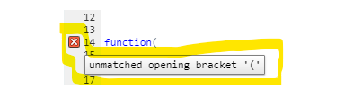
exercise.diagnostics = FALSE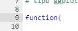
Ejemplo: Cuando exercise.diagnostics = FALSE.
# Observa que no aparece del lado izquerdo alguna advertencia de los siguientes errores:
function(
mean(Examen sorpresa 🤨
Cuestionarios
Si el tema de tutorial requiere reforzar conceptos o relaciones (en lugar de cómo hacer el código) puedes lograrlo incluyendo preguntas (o cuestionarios) de opción múltiple sobre el tema.
Preguntas
Para crear una pregunta de opción múltiple usa la siguiente estructura:
Código
{r quiz}
quiz(
question("Aquí escribes la pregunta",
allow_retry = TRUE, #Que lo vuelva a intentar
answer("Opción 1"),
answer("Opción 2"),
answer("Opción correcta", correct = TRUE)
),
question("Pueses incluir mensajes para cada opción y más de una opción correcta.",
allow_retry = TRUE,
answer("Una opción correcta", correct = TRUE,message = "Mensaje adicional"),
answer("Una opción incorrecta", message = "Mensaje adicional"),
answer("Otra opción incorrecta"),
answer("Otra opción correcta", correct = TRUE)
)
)Resultado
Parámetros de question
Lo básico:
text = "¿Esta es la pregunta?"El parámetotextcontiene una cadena de caracteres o strings (es decir texto dentro de “comillas”).answer("Esta es la respuesta correcta", correct = TRUE, message = "Aquí le dices al usuario algo bonito por haber acertado ;)")La función answer es un parámetro de question y contiene a su vez los siguentes parámetros:
textparámetro de caracteres que definen una posible respuesta a la preguntacorrectun parámetro boolean(o), es decir, TRUE o FALSE. Por defecto,correct = FALSElo cual indica que esa posible respuesta NO ES correcta.messageparámetro de caracteres para dar un mensaje adicional al usuario sobre la opción de respuesta que eligió.
¿Quieres permitir que el usuario vuelva a intentar responder?
Puedes hacerlo con
allow_retryque recibe un boleano. Por defecto (es decir, sino se especifica el valor del parámetro)allow_retry = FALSElo cual implica que NO habrá posibilidad de que el usuario intente contestar de nuevo (si es que contestó incorrectamente).¿Quieres personalizar el mensaje que aparece al contestar correcta o incorrectamente?
Usa
correct = "Este mensaje saldrá cuando aciertes en tu respuesta".incorrect = "Este mensaje saldrá cuando NO aciertes en tu respuesta", solo aparecerá siallow_retry = FALSEtry_again = "Este mensaje saldrá cuando NO aciertes en tu respuesta y tengas la opción de intentarlo de nuevo"¿Cómo cambiar los botones?
submit_button = "Mensaje que tiene el botón para confirmar tu respuesta", por defectosubmit_button = "Submit Answer"try_again_button = "Mensaje que tiene el botón para hacer otro intento"(siempre y cuando te equivoques), por defectotry_again_button = "Try Again"random_answer_order = TRUEes un parámetro que permite cambiar el orden de las opciones de respuesta cada que vuleves a realizar el tutorial. Es decir dar click enStart overEjemplo:
question(
text = "¿Cuál parámetro sirve para cambiar el mensaje del botón para intentar de nuevo?",
allow_retry=TRUE,
answer("incorrect",message = "No sabes. Este sirve para dar un mensaje cuando te equivocas"),
answer("submit_button",message = "No sabes. Aquí cambias de mesnaje de confirmación"),
answer("try_again_button", correct = TRUE, message = "¡Maravillos@ estudiante!"),
correct = "¡Sí que has puesto atención!",
try_again = "Vuelve a leer la sección de parámetros",
submit_button = "Yo sé que sé",
try_again_button = "Acuérdate de mí",
random_answer_order = TRUE
)Si queremos hacer múltiples preguntas usamos la función quiz que tenga por parámetros las diferentes quiestions.
quiz(
question(
text = "¿Cuáles son los parámetros de answer?",
answer("text",correct = TRUE),
answer("correct",correct = TRUE),
answer("message", correct = TRUE),
correct = "¡Muy bien!",
submit_button = "Yo sé que sé",
allow_retry = TRUE,
try_again_button = "Intenta de nuevo",
try_again = "A lo mejor no leiste bien la pregunta"
),
question(
text = "¿Qué función se usa para armar un cuestionario?",
allow_retry=TRUE,
answer("quiz", correct = TRUE, message = "Vas por buen camino"),
answer("questions",message = "Esta función no existe en learnr"),
answer("quizes", message = "Esta función no existe en learnr"),
correct = "Sigue adelante",
try_again = "Intenta de nuevo",
submit_button = "Yo sé que sé",
try_again_button = "Date otra oportunidad"
),
caption = "¿Aprendiste?"
)Para incluir símbolos matemáticos en las preguntas:
Para poder hacer uso de fórmulas dentro de las preguntas, solo ponemos las fórmulas entre signos de pesos ($) en sintáxis de \(\mathbb{L_aT_ex}\) y dos backslash \\, por ejempo:
question(
text = "¿A qué distribución corresponde la siguiente función de densidad? $f(x) = \\frac{e^{\\frac{-(x-\\mu)^2}{2\\sigma^2}}}{\\sqrt{2\\pi\\sigma^2}}$",
answer("Gaussiana", correct = TRUE),
answer("Normal", correct = TRUE),
#Este parámetro permite al usuario que aun cuando seleccione una respuesta correcta de muchas, ésta se evaluará como correcta (a diferencia de "checkbox" en la que hay que marcar todas las respuestas correctas para que se evalúe como correcta).
type = "radio",
correct = "¡¿Eres Gauss!?",
submit_button = "Confía en tí"
)Incluir elementos externos
¿Qué otros elementos se pueden incluir para hacer más llamativo mi tutorial?
Imágenes
Como en cualquier tipo de archivo .Rmd puedes incluir imágenes. Sin embargo, en este caso debe crearse una carpeta dentro del directorio del tutorial con el nombre images y guardar en esta las imágenes a incluir y referenciarlas a dicha carpeta. Por ejemplo:

También se pueden incluir imágenes (y gifs) de internet:


Videos
Se usa la misma sintáxis que para incluir una imagen de internet pero ahora escribimos el link al video. Solo pueden incluirse links a videos de YouTube o vimeo.
Lo atractivo de esta característica es que el video se reproducirá dentro del mismo archivo del tutorial (no te redirige a otra página).
Links
Si deseas añadir material de consulta que se encuentra en internet, puedes incluir referencias dentro del tutorial que te lleven a dichas páginas web.
[Texto de la referencia](https://link-a-la-pagina-de-referencia)
Diseño del tutorial
¿Cómo cambiar la apariencia de mi tutorial?
Temas
De manera simple, podemos hacer que el tutorial se vea con diferente estilo poniendo en el encabezado YAML theme: "default", donde default se puede cambiar por alguno de los temas predeterminados, siguientes:
"default" |
"readable" |
"paper" |
"cerulean" |
"spacelab" |
"sandstone" |
"journal" |
"united" |
"simplex" |
"flatly" |
"cosmo" |
"yeti" |
"darkly" |
"lumen" |
Avance progresivo
Es posible que algún tema del tutorial sea muy extenso y revelar todo el contenido a la vez no sea lo ideal. ¿Cómo podemos ir mostrando el contenido de un tema por partes?
Para mostrar los subtópicos del tutorial (aquellos que tienen ###) uno a la vez dando click al botón Continue para avanzar, tenemos dos opciones:
Aplicarlo a todo el documento activando la opción
progressive: trueen el encabezado YAML.--- title: "Hello, Tutorial!" output: learnr::tutorial: progressive: true runtime: shiny_prerendered ---Aplicarlo solo a algunos subtópicos agregando
{data-progressive=TRUE}adelante de cada encabezado de tema (con ## ) que queremos revelar de manera progresiva.## Tema {data-progressive=TRUE}
Una vez activada la opción progressive no podremos avanzar en el tutorial sin contestar los ejercicios de cada sección. Para permitir el avance sin contestar los ejercicios, podemos agregar allow_skip: true en el encabezado YAML.
---
title: "Hello, Tutorial!"
output:
learnr::tutorial:
progressive: true
allow_skip: true
runtime: shiny_prerendered
--- Para solo permitir avanzar en algunas secciones y no en otras sin contestar, podemos especificar{data-allow-skip=TRUE} o {data-allow-skip=FALSE} en cada tema.
Otro formato del tutorial
¿Es posible incluir ejercicios en otros tipos de documentos que no sean un tutorial (learnr::tutorial)?
¡Sí! Por ejemplo, durante la presentación de un tema en clase, usando una presentación tipo slidy. Para esto, se debe incluir runtime: shiny_prerendered en el encabezado YAML del documento de la presentación:
# title: "Habits"
# author: John Doe
# date: March 22, 2005
# output: slidy_presentation
# runtime: shiny_prerenderedAntes de incluir un chunk de ejercicio en la presentación solo cargamos la paquetería learnr.
¿Una última pregunta?
Algo extra: Calificar código
¿Es posible dar retroalimentación más personal en los ejercicios de código?
¡Sí! Si deseas que los usuarios tengan retroalimentación cuando cometan algún error en los ejercicios de código (en términos del objetivo de aprendizaje en el ejercicio), puedes implementarlo con lo que veremos en esta sección.
Instalar gradethis
La paquetería que usaremos para este fin se llama gradethis y te sugerimos hacer lo siguiente para tenerla instalada en tu computadora:
Si ya instalaste
learnrcon el comandoinstall.packages("learnr")entonces utilizaremove.packages("learnr")para desinstalarlo.Sea afirmativo o no lo anterior, haz lo siguiente:
Usa el comando
remotes::install_github("rstudio/learnr")para tener la versión en desarrollo delearnr.Usa el comando
remotes::install_github("rstudio-education/gradethis", force = TRUE)para instalargradethis.Cargar la paquetería con el comando
library(gradethis)después de cargarlearnr, ambas dentro del chunk inicial (que se puede llamar setup).
Esquema
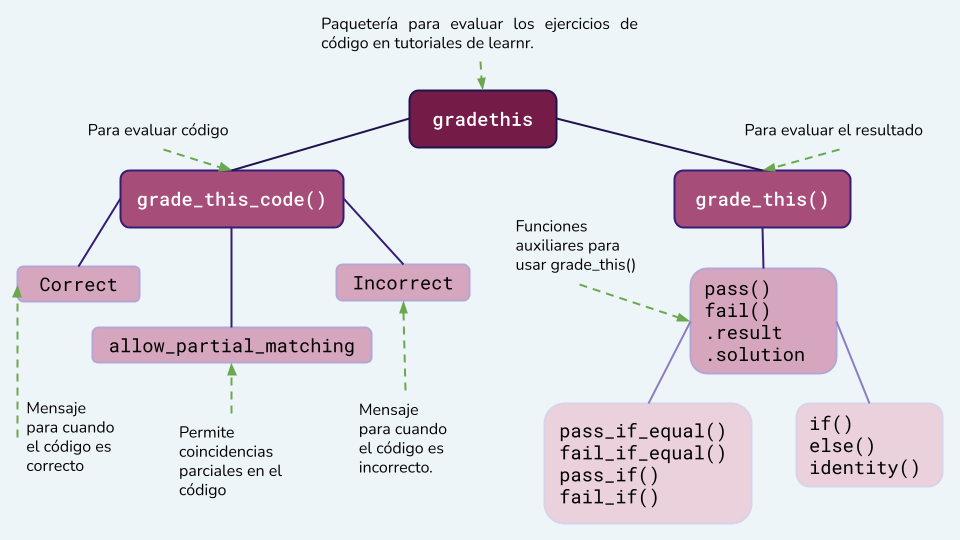
Existen dos formas principales para evaluar el ejercicio de código:
Evaluar el código.
En la paquetería
gradethisesto se puede hacer con la funcióngrade_this_code(). Esta función reemplaza a la funcióngrade_code()( que se menciona en la documentación delearnr).Evaluar el resultado que se deriva del código.
Con la función
grade_this()se puede personalizar el criterio de evaluación con respecto al resultado. Por ejemplo: si el resultado es mayor al esperado, se puede implementar unmensaje que diga “el resultado correcto es menor al obtenido” .Esta función, como en el punto anterior, reemplaza a
grade_result().
grade_this_code()
Ejemplo:
Implementemos un ejercicio donde el usuario tenga que sumar 2+2 (= 🐟) en el que se evaluará que el código sea 2+2.
Crear el chunk de ejercicio.
Crear el chunk solution.
Crear el chunk check:
El chunk de ejercicio se llama
gejericicio, por lo que el nombre del chunk check debe sergejercicio-check.Dentro del chunk siguiente se usará la función
grade_this_code().'''{r gejercicio-check} grade_this_code() '''
Resultado:
# Suma dos más dosNota que no importa si pones espacios en el código o pones el código en otras líneas (diferentes a las del chunk solution).
Nota que se añade un botón que se llama
Submit answerpara que el código sea evaluado.Intenta escribir
3+1,2*2,4*1,… y nota que esa no es la respuesta correcta aun cuando el resultado sea el mismo (4).
Parámetros
Se pueden modificar los mensajes que aparecen cuando se comete un error o un acierto con los parámetros de grade_this_code():
correctrecibe una cadena de caracteres la cual aparece cuando el código del usuario y el código de la solución coinciden.Por ejemplo
correct = "Haz hecho la suma que deseo"incorrectrecibe una cadena de caracteres la cual aparece cuando el código del usuario y el código de la solución NO coinciden.Por ejemplo
incorrect = "Intenta sumar dos números iguales y que el resultado sea 4"allow_partial_matchingpuede serTRUEoFALSE. Por defecto esFALSEy cuandoallow_partial_matching = TRUEentonces se permite que aparezcan mensajes que indican dónde no coincide el código con la solución.
Ejemplo del ejemplo anterior tenemos:
'''{r gejercicio-check}
grade_this_code(correct = "Muy bien",
incorrect = "Intenta sumar dos números iguales y que el resultado sea 4",
allow_partial_matching = TRUE)
'''# Suma dos más dos2+2¿Te quedó duda?
grade_this()
Ejemplo:
Implementemos un ejercicio donde el usuario tenga que obtener el resultado de sumar 2+2 (= 🐟) y se evaluará que dicho resultado sea 4.
Crear el chunk de ejercicio.
Crear el chunk solution.
Crear el chunk check:
El chunk de ejercicio se llama
gtejericicio, por lo que el nombre del chunk check debe sergtejercicio-check.En el chunk siguiente se usará la función
grade_this(). Dentro de esta función se debe definir la lógica que se usa para evaluar el ejercicio. En el ejemplo se muestra una forma de comparar el resultado del usuario (.result) con el resultado correcto (.solution) y si son iguales se marca como correcto el ejercicio.Esta es solo una forma de varias que se pueden implementar para evaluar el ejercicio, las cuales veremos más a detalle en la sección siguiente.
'''{r gtejercicio-check} grade_this( if(.result == .solution){ pass("Muy bien") } else{ fail("El resultado debe ser igual a 2+2") } ) '''
Resultado:
# Obten el resultado de sumar dos más dos- Notemos que no importa si el resultado correcto (
4) se obtiene de otra forma diferente (3+1,4*1,4+0) a la propuesta. Mientras sea4el ejercicio se marca como correcto.
Funciones para definir la lógica de evaluación
Dentro de gradethis existen funciones que se puede usar en grade_this() para ayudar a definir la forma de evaluar los ejercicios de código.
Funciones necesarias
| Función | Descripción |
|---|---|
pass() |
En esta función se escribe el mensaje que aparecerá cuando se marque como correcto el ejercicio. |
fail() |
En esta función se escribe el mensaje que aparecerá cuando se marque como incorrecto el ejercicio. |
.result |
Hace referencia al resultado que se obtiene con el código del usuario. |
.solution |
Hace referencia al resultado correcto que se obtiene con el código del chunk solution. |
Funciones auxiliares para evaluar
| Función | Descripción |
|---|---|
pass_if() |
En el parámetro cond se recibe la condición que debe cumplir .result para que el ejercicio sea correcto y en el parámetro message se escribe el mensaje que aparecerá cuando la condición anterior se cumpla. |
fail_if() |
En el parámetro cond se recibe la condición con la cual se evaluará como incorrecto el ejercicio y el parámetro message recibe el mensaje que aparecerá cuando dicha condición se cumpla. |
pass_if_equal() |
Compara los parámetros y y x y evalua el ejercicio como correcto cuando estos son iguales, devolviendo el mensaje que se le pase con el parámetro message. Por default y es .solution y x es .result. |
fail_if_equal() |
Compara los parámetros y y x y evalua el ejercicio como incorrecto cuando estos son iguales, devolviendo el mensaje que se le pase en el parámetro message. Por default y es .solution y x es .result. |
Ejemplo:
En el ejercicio gt_ejercicio se pide obtener cuántas observaciones de la tabla penguins tienen el valor Torgensen en el atributo island.
'''{r gt_ejercicio-check}
grade_this({
# Se evalua automáticamente como correcto si .result es igual a .solution
pass_if_equal(message="¡Muy bien!")
# Se evalua como incorrecto cuando el número que se especificó no es el # correcto y se muestra un mensaje personalizado.
fail_if_equal(sum(penguins$island=="Biscoe"), message = "No son las observaciones de la isla correcta.")
fail_if_equal(sum(penguins$island=="Dream"), message = "No son las observaciones de la isla correcta.")
# Se muestra el mensaje automático de retroalimentación cuando existe # cualquier otro error en el código.
fail()
})
'''Resultado:
# Usando los datos de la tabla penguins, ¿cuántos pingüinos provienen de la isla Torgersen?sum(penguins$island=="Torgersen")- Intenta escribiendo
sum(penguins$island=="Biscoe")o168para ver el mensaje.
También se puede definir una lógica para evaluar usando claúsulas if() y else() como en el primer ejemplo de esta sección y usar pass() y fail() para indicar cuándo se evalua como correcto y cuándo como incorrecto.
Ejemplo:
Código del chunk-check
grade_this({
# ¿El resultado es un objeto data.frame?
if (!inherits(.result, "data.frame")) {
fail("Tu resultado debe ser un data.frame")
}
# Ahora que sabemos que .result es un data.frame veremos si tiene la especie correcta...
if (.result$species[1] != "Gentoo") {
fail("Las observaciones deben ser de la especie Gentoo.")
}
# ...ahora comprobamos que la isla sea la correcta
if (.result$island != "Biscoe") {
fail("Las observaciones deben ser de la isla Biscoe.")
}
# ...comprobamos que el número de observaciones es el que debe ser
if (nrow(.result) != 124) {
fail("La tabla debe tener 124 observaciones.")
}
# ahora que revisamos las condiciones anteriores mostramos el mensaje de que el resultado es correcto
pass(message="Ahora ya sabes filtrar datos de una tabla.")
})Resultado
# Crea una tabla que contenga solo los pingüinos de la especie Gentoo
# y la isla Biscoe usando el data.frame penguins.
library(dplyr)
penguins %>% filter(species==" ", island==" ")Intenta sustituir la respuesta anterior por:
penguins %>% filter(species=="Adelie", island=="Dream")head(penguins %>% filter(species=="Gentoo", island=="Biscoe"))matrix(NA,3,2)
Un paso más allá: Un diseño personalizado
CSS
Si quieres un diseño distinto (y propio) a los temas predeterminados puedes crear un archivo o sección CSS para el tutorial.
Para ello considera el siguiente esquema que ayudará a entender la sintáxis que veremos más adelante:
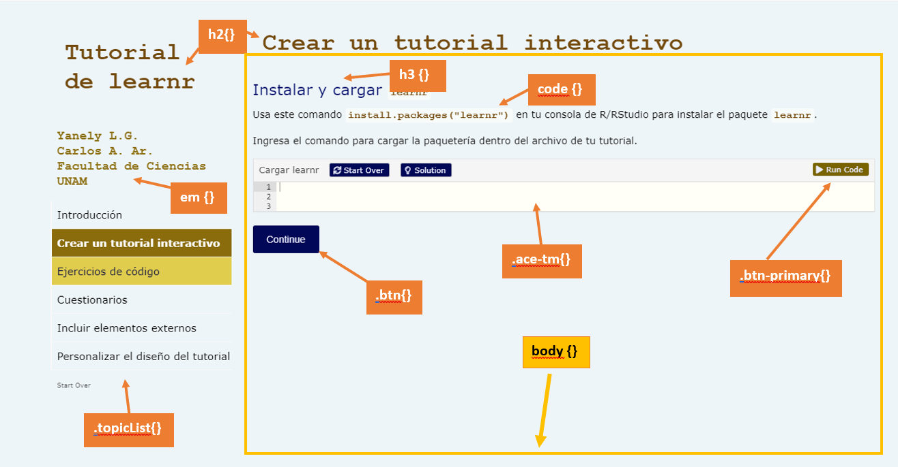
CSS significa Cascading Style Sheets y es un lenguaje de hojas de estilo en cascada que separa los elementos del tutorial para que puedas modificarlos.
Los comandos principales para hacer estos cambios son:
colorcolor de la letrafont-familytipo de letrafont-sizetamaño de la letrabackground-colorcolor de fondo
Un ejemplo para cambiar el body (ver imagen) es el siguiente:
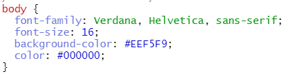
Nota que el color lo pusimos en formato hexadecimal.
Ejercicio. Completa el siguiente código para cambiar el tipo de letra del nombre de los autores (Arial, Verdana, Helvetica o la que se pueda).
__ {
color: #8A6C0C;
font-family: ______;
font-size: 18px;
}
#Como esta no es sintáxis de R, habrá un error al dar click en "Run Code"Estas especificaones se pueden realizar en un archivo CSS o al inicio del tutorial.
Si lo pones al inicio del tutorial (no en un chunk de código) necesitarás un esquema como este:
<style>
h2 {
color: #6D4101;
font-size: 35px;
}
body {
font-family: Verdana, Helvetica, sans-serif;
font-size: 16;
background-color: #EEF5F9;
color: #000000;
}
</style>